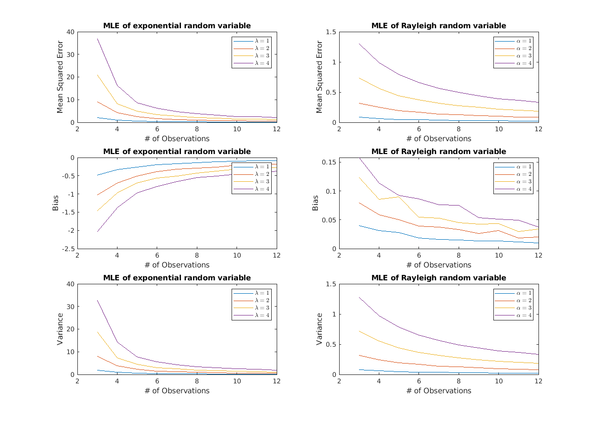
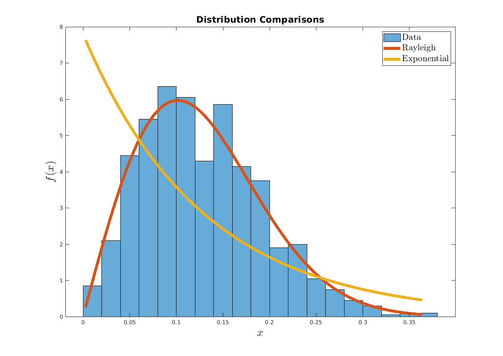

Maximum likelihood estimation
Dan Brody, I-An Huang, Nikita Teplitskiy
Contents
Part 1
Part 1: Generate random draws from both of the exponential and Rayleigh random variables. You can use the EXPRND and RAYRND functions in MATLAB for this. Implement your ML estimators in MATLAB and plot the MSE with respect to # of observations. On separate plots, plot the bias and the variance of your estimators, with respect to the # of observations. Do this for a couple of values of lambda.
clc clear all close all M = 1e4; N = 12; % ML estimator for exponential random variable % N: number of observations % X: N by M array of observations exp_estimator = @(N, X) N./sum(X, 1); % ML estimator for Rayleigh random variable % N: number of observations % X: N by M array of observations ray_estimator = @(N, X) sqrt(sum(X.^2, 1)./(2*N)); % preallocate arrays exp_MSE = zeros(10, 4); ray_MSE = zeros(10, 4); exp_bias = zeros(10, 4); ray_bias = zeros(10, 4); exp_var = zeros(10, 4); ray_var = zeros(10, 4); % Compute for 4 parameter values for lambda=1:4 alpha = lambda; for n=1:N % Compute statistics for exponential distribution X = exprnd(1/lambda, n, M); % generate random variable lambda_hat = exp_estimator(n, X); % estimate parameter exp_MSE(n, lambda) = mean((lambda - lambda_hat).^2); % compute MSE exp_bias(n, lambda) = mean(lambda - lambda_hat); % compute bias exp_var(n, lambda) = var(lambda_hat); % compute variance % Compute statistics for Rayleigh distribution X = raylrnd(alpha, n, M); alpha_hat = ray_estimator(n, X); ray_MSE(n, alpha) = mean((alpha - alpha_hat).^2); ray_bias(n, alpha) = mean(alpha - alpha_hat); ray_var(n, alpha) = var(alpha_hat); end end
MSE of first 2 observations too large to plot
subplot(3, 2, 1) plot(3:N, exp_MSE(3:N,:)) ylabel('Mean Squared Error') xlabel('# of Observations') title('MLE of exponential random variable'); legend({'$\lambda = 1$','$\lambda = 2$', ... '$\lambda = 3$','$\lambda = 4$'}, ... 'Interpreter','latex'); subplot(3, 2, 2) plot(3:N, ray_MSE(3:N,:)) ylabel('Mean Squared Error') xlabel('# of Observations') title('MLE of Rayleigh random variable'); legend({'$\alpha = 1$','$\alpha = 2$', ... '$\alpha = 3$','$\alpha = 4$'}, ... 'Interpreter','latex'); subplot(3, 2, 3) plot(3:N, exp_bias(3:N,:)) ylabel('Bias') xlabel('# of Observations') title('MLE of exponential random variable'); legend({'$\lambda = 1$','$\lambda = 2$', ... '$\lambda = 3$','$\lambda = 4$'}, ... 'Interpreter','latex'); subplot(3, 2, 4) plot(3:N, ray_bias(3:N,:)) ylabel('Bias') xlabel('# of Observations') title('MLE of Rayleigh random variable'); legend({'$\alpha = 1$','$\alpha = 2$', ... '$\alpha = 3$','$\alpha = 4$'}, ... 'Interpreter','latex'); subplot(3, 2, 5) plot(3:N, exp_var(3:N,:)) ylabel('Variance') xlabel('# of Observations') title('MLE of exponential random variable'); legend({'$\lambda = 1$','$\lambda = 2$', ... '$\lambda = 3$','$\lambda = 4$'}, ... 'Interpreter','latex'); subplot(3, 2, 6) plot(3:N, ray_var(3:N,:)) ylabel('Variance') xlabel('# of Observations') title('MLE of Rayleigh random variable'); legend({'$\alpha = 1$','$\alpha = 2$', ... '$\alpha = 3$','$\alpha = 4$'}, ... 'Interpreter','latex'); set(gcf, 'Position', [0 0 1200 850])
Part 2
The data in the .mat file, data.mat, has been drawn from either an exponential distribution, or a Rayleigh distribution. Compute the max-likelihood estimate of the parameter using both. Using your estimators that you developed in part 2, compute the max-likelihood estimates of the parameter. Which distribution do you think the data was drawn from? Justify your answer.
% plot data distribution close all load('data.mat', '-mat') histogram(data, 'Normalization','pdf') hold on % compute max-likelihood estimates ray_pred = ml_ray(data); exp_pred = ml_exp(data); % define PDFs of Rayleigh and exponential random variables ray = @(x,s) x./(s.^2) .* exp(-x.^2./(2*s^2)); expo = @(x,l) l*exp(-l*x); % plot PDFs of Rayleigh and exponential against data distribution x = linspace(min(data),max(data)); plot(x, ray(x, ray_pred), 'LineWidth', 5); plot(x, expo(x, exp_pred), 'LineWidth', 5); ylabel('$f(x)$','Interpreter','latex','FontSize', 20) xlabel('$x$','Interpreter','latex','FontSize', 20) title('Distribution Comparisons','FontSize', 16); legend({'Data','Rayleigh', ... 'Exponential'},'Interpreter','latex','FontSize', 16); set(gcf, 'Position', [0 0 1200 850]) % ML estimator of Rayleigh random variable function s_hat = ml_ray(x) dim = size(x); s_hat = sqrt(sum(x.^2, 2)./(2*dim(2))); end % ML estimator of exponential random variable function l_hat = ml_exp(x) dim = size(x); l_hat = dim(2)./sum(x, 2); end
Data is drawn from Rayleigh distribution because they match more closely.